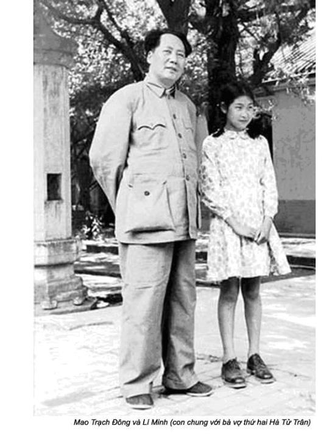
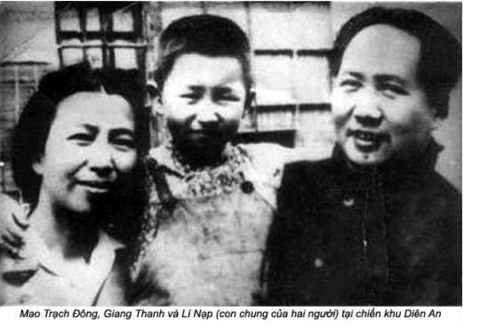

Chương 6

hỉ vài ngày sau khi tôi được tiếp kiến Mao lần đầu, gần nửa đêm ngày lễ 1-5, một vệ sĩ của Mao đã triệu tôi đến ngay để gặp Chủ tịch.
Tôi vội đến tư dinh của Mao, được biết ông bị ốm. Nhưng tại sao người ta lại gọi tôi muộn như vậy?
Cho tới lúc đó, tôi chưa bao giờ bước chân vào cái tư dinh thâm nghiêm, có vẻ đầy bí ẩn của Mao. Đi qua cổng, bước vào trong sân, tôi cảm giác như chính tôi đã vượt qua cuộc Vạn Lý Trường Chinh, từ một bác sĩ quèn trở thành một nhân viên trong trung tâm của cuộc cách mạng. Tôi nghĩ, từ nay trở đi, cuộc đời tôi sẽ gắn chặt với cái miền đất thâm cung bí sử này. Tôi thật sự xúc động.
Người ta thường kể, hàng ngày Mao sống rất đơn giản, khổ hạnh, một tấm gương sáng về sự tiết kiệm. Sau khi ông qua đời, cánh cửa tư dinh của ông được mở, những bộ quần áo cũ kỹ sờn rách, chiếc áo choàng buổi sáng, đôi dép lê… mới xuất hiện trước công chúng là những bằng chứng cho thấy ông đã cự tuyệt sự xa hoa một cách có ý thức. Mao vốn là một nông dân, có sở thích đơn giản. Mao chỉ mặc quần áo khi chẳng đừng, còn hầu như lúc nào ông cũng khoác một chiếc áo choàng và nằm trên giường, chân đất. Khi cần ông mặc nhưng bộ quần áo cũ, đi đôi giày vải đã mòn đế, chỉ khi xuất hiện trước đám đông mới mặc quần áo chỉnh tề, đó là bộ đồng phục “kiểu Mao”, chân đi giày da. Thông thường, một trong những vệ sĩ của Mao là người chăm lo tìm mua quần áo và thửa giày mới cho ông. Những bức ảnh ông ăn mặc tươm tất làm việc trong văn phòng đều là ảnh đã được bố trí sẵn. Hầu hết công việc, ông đều giải quyết trong phòng ngủ hoặc bên bể bơi.
Mặc dù vậy, ông sống cũng như một vị hoàng đế. Tư dinh của ông nằm ở chính giữa khu Trung Nam Hải, chính điện của triều đình trước đây, hướng về phía Nam, giữa hồ Trung và hồ Nam. Tư dinh này được canh gác cẩn mật nhất thế giới. Khách nước ngoài viếng thăm có cảm giác không có lính canh gác, nhưng thực ra, lính được bố trí gác khắp nơi khu Trung Nam Hải, nhưng họ kín đáo đến nỗi người ta không nhận điều đó. Tất cả xoay quanh như một vòng tròn lớn mà ông là tâm điểm. Vệ sĩ của Mao đồng thời cũng là người phục vụ ông ta. Họ đều mang súng ngắn, nhưng thực ra họ không cần phải mang vũ khí, vì bên ngoài khu vực trọng yếu đó người ta đã thực hiện những biện pháp an ninh nghiêm ngặt đến nỗi tư dinh của ông kín như nằm trong cái kén. Ngoài những vệ sĩ của Mao ở bên ngoài cũng như bên trong tư dinh, còn những “trạm gác ngoại vi” của những nhân viên Ban An ninh trung ương. Họ cũng được vũ trang đầy đủ.
Những người lính vũ trang của Quân đoàn Thủ đô, danh nghĩa dưới quyền của Bộ tổng tham mưu, nhưng thực ra lại thuộc quyền quản lý trực tiếp của Uông Đông Hưng với tư cách thứ trưởng Bộ Nội Vụ, canh gác những khu vực lân cận của Trung Nam Hải, đó là lớp bảo vệ vòng ngoài. Những lớp vỏ canh gác này chính là cơ sở bảo vệ lãnh tụ mỗi khi Mao đi ra ngoài.
Nơi ở của Mao được giữ tuyệt mật, chỉ những cán bộ lãnh đạo cao cấp của đảng mới biết. Mỗi khi ông rời Trung Nam Hải đi thăm viếng, xe chở ông được đỗ cách xa khu dân cư để người ta khỏi nhận ra số xe, không những thế, biển số xe thường xuyên thay đổi. Hệ thống an ninh tiếp thu kinh nghiệm của Liên Xô và sự bảo mật các Hoàng đế thời xưa ngay sau khi những người cộng sản cướp chính quyền.
Dinh thự của Mao, vốn được xây dựng từ thời Càn Long (1735-1796), vừa là thư viện vừa là nơi ẩn náu của vua nếu có binh biến. Ngôi nhà này hàng thập kỷ không được trùng tu, có nguy cơ bị hỏng. Nó vẫn chưa lấy lại được cái vẻ hào nhoáng ngày xưa, vì công việc sửa chữa đang dở dang. Lần đầu bước vào khu nhà đó, tôi có ấn tượng rằng nét hào hoa chính là ở sự giản dị có chủ ý bày trong nội thất. Nhưng Càn Long vốn lại là người ưa hiện đại.
Cổng chính tư dinh của Mao ở phía Nam toà nhà, theo phong tục cổ truyền được sơn loè loẹt. Tấm bảng gỗ treo trên cổng mang chữ “Vườn thượng uyển” do chính vua Càn Long viết. Tất cả những bảng chữ treo trên những lối vào toà nhà đều là bút tự của Càn Long. Những viên ngói trên mái đều có màu xám, chứ không phải thiếp vàng như trong Cấm Thành, nhưng toà nhà lại được xây dựng theo cùng một phong cách cung điện của vua.
Bên trong cổng chính, hai bên lối đi là hai căn phòng nhỏ thường có vệ sĩ. Chỉ có những người có thẻ đặc biệt loại “A” mới được phép ra vào, có tường bao bọc xung quanh. Đi qua sân rộng là một khu nhà đồ sộ thiết kế theo lối Giao Hoà Đường hoặc Trường Sinh Đại Sảnh hội họp, đón tiếp khách nước ngoài trình quốc thư, tổ chức lễ tiệc chiêu đãi trước khi xây Nhân Dân Đại Lễ Đường năm 1959. Ngay phía sau Trường Sinh Đại Sảnh là Giao Hoà Đường, đó thư viện phong phú rất nhiều sách của Mao chọn lọc, nhưng thường đóng cửa im ỉm.
Khu tư dinh của Mao, biệt danh Phòng Đọc Hương Cúc, ngay trong sân thứ hai, nối liền với sân thứ nhất bằng dãy hành lang có mái che. Khu vườn tuyệt đẹp, dưới bóng những cây thông, dẫy trắc bá cổ thụ đẹp đẽ là những chiếc bàn, những chiếc ghế bằng mây, nơi mùa hè Mao thường tổ chức cuộc họp ngoài trời. Dinh thự của ông gồm hai toà nhà chính với nhiều công trình phụ. Phòng lớn của ông vừa là phòng ngủ, vừa là phòng làm việc ở toà nhà thứ nhất, cách biệt với phòng ngủ của Giang Thanh bằng một phòng ăn rộng. Trong toà nhà thứ hai, đi qua một hành lang nối với phòng ngủ của Giang Thanh là phòng khách của bà. Bên cạnh đó, phòng của Diệp Tử Long, chánh thư ký riêng, đồng thời cũng là quản trị cao cấp của Mao, chuyên lo đáp ứng những nhu cầu cá nhân cho hai vợ chồng Chủ tịch.
Trong một toà nhà khác ở phía Tây nơi ở của Diệp Tử Long, thông với Giao Hoà Đường là nhà bếp. Diệp cũng lo việc ăn uống cho Mao. Việc chế biến thực phẩm tuy theo khuôn mẫu của Liên Xô, nhưng lại phỏng theo phương cách cổ điển thời vua chúa, được Ban an ninh của Uông Đông Hưng canh chừng. Ngay sau khi Mao từ Moscow trở về vào đầu năm 1950, Ban an ninh đã được hai chuyên gia Liên Xô truyền cho những phương pháp chế biến, cách kiểm tra thực phầm dành cho giới lãnh đạo ở Trung Nam Hải. Một nông trang – công xã Tụ Sơn – chuyên cung cấp đặc sản rau, thịt, gà, trứng cho Mao và những lãnh tụ cao cấp khác. Đầu bếp của Mao chỉ cần gửi thực đơn đến phòng cung ứng của Ban an ninh ở phía bắc Trung Nam Hải, gần công viên Bắc Hải. Phòng cung ứng chuyển tiếp thực đơn đến công xã Tụ Sơn. Từ đó, thực phẩm được chuyển về phòng cung ứng ở công viên Bắc Hải, để người ta khám nghiệm thực phẩm đó trong hai phòng kiểm nghiệm xem chúng tươi đến mức nào, độ dinh dưỡng ra sao và có độc tố không. Sau đó, thức ăn được nếm thử trước khi mang cho Mao thưởng thức. Đối với tất cả các quan chức cao cấp, kể cả ở các tỉnh, người ta đều áp dụng phương pháp tốn kém đó, ngốn không biết bao tiền của dân. Phòng ngủ của Mao nối với một toà nhà khác, ông thường dùng làm văn phòng bằng một hành lang. Tuy nhiên, văn phòng này quanh năm khoá trái, chỉ mở cửa khi cần để chụp ảnh. Mao chẳng bao giờ dùng đến nó.
Một toà nhà khác chắn ngang toà nhà Mao và Giang Thanh sống trong đó là nơi Lí Minh, con gái riêng của Mao với Hạ Tử Trân, Lí Nạp, con gái của ông với Giang Thanh và chị của Giang Thanh, Lý Vân Lục đang cư ngụ.


Lý Vân Lục hơn Giang Thanh vài tuổi, chân bó từ bé. Sau khi mẹ qua đời, bà nuôi dưỡng Giang Thanh. Về sau bà trở thành vợ bé của một thương gia. Khi giới lãnh đạo chuyển về Trung Nam Hải, Giang Thanh yêu cầu bà cùng với con trai về ở, chăm sóc dạy dỗ Lí Nạp và Lí Minh, vì cả Mao và Giang Thanh không có thời gian chăm sóc và ít có điều kiện gặp con. Bọn trẻ học trong trường nội trú, thậm chí, trong những kỳ nghỉ, thỉnh thoảng chúng mới gặp hai người trong bữa ăn, mỗi năm không quá vài lần.
Toà nhà thứ tư, văn phòng của các nhân viên y tế và thư ký của Mao cũng như là nơi ở của đứa cháu trai Mao Viên Tân, lúc đó còn đang học trung học. Ngoài ra, ở đó còn có một phòng chơi bóng bàn, một phòng lưu giữ quà tặng, quần áo của Mao, nhiều đồ lặt vặt của Giang Thanh. Trong một phòng khác, treo những bức tranh của các hoạ sĩ nổi tiếng như Tề Bạch Thạch và Từ Bắc Hồng tặng Mao. Tuy nhiên, hầu hết những tặng phầm đều của nước ngoài. Về sau tôi phát hiện ra một hộp xì gà Cuba lớn, bằng gỗ chạm, rất nghệ thuật, do Fidel Castro tặng và một két rượu Brandy lâu năm do Chủ tịch nước Rumania, Ceausescu tặng. Vua Iran tặng Mao một hộp đựng thuốc lá chạm vàng và bạc. Diệp Tử Long vừa là quản gia, vừa là thủ kho khu nhà đó.
Tư dinh có một cái sân bên trong lớn nhất, nơi có những khóm tre và cây cối luôn luôn xanh tươi, một vòi phun nước, một dàn nho. Mùa hè, không khí ở đây thật dễ chịu, mát mẻ hơn bất cứ nơi đâu Trong sân còn có một vườn rau xanh trông rất bắt mắt, cuối thập niên 1960, người ta đã xây một hầm phòng không dưới khu vườn này.
Toà nhà thứ 5, có cổng ra vào riêng, đơn giản hơn nhiều so với lối cổng phía Nam, một lối vào ở phía sau thuộc Ban Quản lý Quảng Trường kiểm soát. Trước khi Đại lễ đường xây dựng, các đại sứ thường đến khu nhà này trình quốc thư. Toà nhà còn có phòng ngủ các vệ sĩ của Mao, các y tá của Giang Thanh. Ngoài ra, ở đó còn cất chứa thực phẩm dành cho Mao, có 3 tủ lạnh sản xuất từ những năm 1940 nhãn hiệu General Electric cũng như dự trữ những vật dụng hàng ngày và thuốc men.
Phòng ở vệ sĩ của Mao, trong đó lịch trình làm việc của Mao cũng được ghi chép dán ngay sau cánh cửa, toà nhà thứ tư. Bất kỳ ai, kể cả những nhân vật thân cận muốn gặp gỡ với Mao, trước hết đều phải trình phòng bảo vệ. Tôi hộc tốc tới khu vườn lúc nửa đêm, 30 tháng 4 năm 1955, vì Mao ốm, một vệ sĩ niềm nở ra đón. Tôi hỏi:
- Có chuyện gì thế.
Người vệ sĩ trả lời:
- Chủ tịch đã uống thuốc ngủ hai lần, nhưng không tài nào chợp mắt được. Chủ tịch muốn nói chuyện với đồng chí.
Tôi được đưa vào phòng ngủ của Mao. Đó là căn phòng quá rộng, gần rộng bằng phòng khiêu vũ. Đồ đạc trang trí toàn đồ Tây phương, hiện đại, tiện lợi, bốn cửa sổ có treo những tấm rèm nhung dày. Sau này tôi mới biết những tấm rèm không bao giờ mở, ở trong buồng Mao người ta không biết bên ngoài ban ngày hay ban đêm.
Mao nằm trong một chiếc giường gỗ rộng, gấp rưỡi chiếc giường đôi bình thường, do một thợ mộc ở Trung Nam Hải thửa riêng cho ông. Trên giường sách vở chất đống, tôi nhận thấy một bên giường cao hơn bên kia, nơi Mao đang nằm, khoảng mười xăng-ti-mét. Sau này, Lý Ẩm Kiều nói rằng giường nghiêng là để đảm bảo an toàn cho Mao không bị lăn khỏi giường. Mấy năm sau tôi mới biết, chiếc giường kê nghiêng để những cuộc làm tình của Mao có nhiều khoái cảm, hơn là để Mao khỏi lăn xuống đất.
Cạnh giường, một chiếc bàn lớn, vừa làm bàn ăn, vừa là bàn làm việc. Mao thường ăn một mình trong phòng ngủ, ông đã sống ly thân với Giang Thanh, hiếm khi họ ăn chung với nhau.
Thấy tôi, Mao bảo:
- Tôi chưa ăn bữa tối đâu đấy! – rồi ông nói tiếp – Tôi muốn nói chuyện phiếm với đồng chí.
Ông khoác một cái áo choàng, lộ khoảng ngực trần. Tay ông cầm một cuốn cổ sử Trung Quốc cũ bọc vải gai. Mao đặt cuốn sách sang một bên, tôi kéo ghế ngồi xuống bên cạnh, nhấm nháp tách trà mà người vệ sĩ mang đến.
- Có tin tức gì không? – Mao hỏi.
Tôi bối rối. Các bản tin tôi biết chẳng qua đọc từ tờ Nhân Dân Nhật Báo, như vậy, tôi tin Mao cũng rất quan tâm đến báo chí. Tôi chẳng biết tin tức gì hơn ông.
- Chẳng hạn mấy ngày qua đồng chí đã gặp những ai? – Mao nói thêm khi nhận thấy sự lúng túng của tôi – trao đổi về những vấn đề gì?
“Có tin tức gì không?”, từ giờ trở đi thành câu cửa miệng mỗi khi gặp, ông cũng nêu câu hỏi đó đối với các cộng sự khác. Bằng cách đó, Mao đã thu lượm được thông tin cũng như thường xuyên kiểm tra chúng tôi, ông mong muốn chúng tôi kể cho ông nghe mọi chuyện kể cả công việc, tạo điều kiện cho chúng tôi tranh luận lẫn nhau. Ông thoả mãn khi khích được một cộng sự này phản biện với những cộng sự khác. Ông cho phép tự do tranh luận.
Tôi kể cho ông nghe cuộc nói chuyện của tôi với Phó Liêm Chương. Ông chăm chú lắng nghe, rồi ông kể về Phó Liêm Chương đã đi theo những người cộng sản trong cuộc Vạn Lý Trường Chinh từ tỉnh Giang Tây đến sở chỉ huy mới ỏ tình Thiểm Tây như thế nào.
- Trong cuộc tranh đấu của chúng ta chống lại Quốc dân đảng, năm người của gia đình Phó Liêm Chương đã bị hành hình theo lệnh của đảng cộng sản, trong đó có con gái và con rể của đồng chí ấy. Dù là đảng viên cộng sản, nhưng họ vẫn bị buộc tội là thành viên bí mật của một sư đoàn Quốc dân đảng.
Phó Liêm Chương, từng kể, lúc đó ông chăm sóc Mao đang mắc bệnh sốt rét.
Mao nói tiếp:
- Dù Phó không còn là đảng viên cộng sản nữa, nhưng tôi đã hỏi đồng chí ấy có muốn tham gia cuộc Vạn Lý Trường Chinh hay không. Đồng chí ấy đồng ý đi theo. Chúng tôi cho mang ngựa đến, nhưng đồng chí ấy không biết cưỡi, đã ngã xuống sông, suýt chết đuối. Tuy thế đồng chí ấy vẫn tiếp tục lên đường đến Thiểm Tây cùng chúng tôi. Phó Liêm Chương là người tốt, nhưng không cần phải làm theo tất cả những gì đồng chí ấy yêu cầu, cũng không nên báo cho đồng chí ấy biết về tình hình sức khỏe của tôi. Nếu tôi cảm thấy khó ở, hãy nói với tôi biết về cách chữa bệnh, nhưng đừng nói với đồng chí đó. Nếu tôi đồng ý với cách điều trị đó, tôi sẽ không phê bình, thậm chí cả khi đồng chí làm sai. Nếu đồng chí không trao đổi với tôi về phương pháp điều trị, tôi sẽ không thừa nhận đồng chí đã chữa khỏi bệnh, dù tôi khỏi bệnh thật.
Một mặt tôi vui mừng vì không phải thảo luận với Phó Liêm Chương, mặt khác tôi cảm thấy lo lắng, vì Mao muốn tôi cho ông biết phương pháp điều trị. Có đúng là Mao yêu cầu tôi trình bày với ông những thay đổi về tâm-sinh lý của cơ thể trong thời kỳ mắc bệnh hay không? Tôi cần phải thuyết phục ông theo cách điều trị của tôi hay không? Tôi làm sao tìm được những thuật ngữ đơn giản để lý giải cho ông hiểu.

Mao là người bệnh khó tính.
Bữa ăn được dọn ra. Các món ăn lại được đảo qua dầu. Mao đã 62 tuổi, nặng hơn 80 cân, quá béo so với khổ người cao 1 mét 75 của ông. Sau này, tôi thường góp ý với ông nên ăn uống điều độ, không nên ăn quá nhiều chất béo, nhưng ông không nghe. Thời còn trẻ, ông đã thích ăn thịt lợn mỡ và ông vẫn giữ thói quen này cho đến khi chết. Ông còn mời tôi ăn món mướp đắng xào ớt cay, rồi hỏi:
- Ngon không?
Cả đời tôi chưa bao giờ nếm món này, tôi bảo:
- Cay và đắng lắm.
Mao cười rung cả cổ:
- Ai cũng nên nếm một ít vị đắng trong đời, nhất là người như đồng chí. Đồng chí học y khoa, thành bác sĩ, có lẽ chưa bao thử món “Chi ku” cay đắng như thế này.
“Chi ku”, có nghĩa ăn món có vị đắng, hoặc có nghĩa là cuộc đời phải chịu nhiều trầm luân, khổ ải. Tôi không chắc Mao chỉ nói về món ăn thôi, hay ông chơi chữ, ám chỉ rằng, ông coi tôi như loại công tử bột, sản phẩm của tầng lớp thượng lưu. Tôi lặp lại:
- Tôi chưa bao giờ nếm món mướp đắng, nhưng nó có vị lạ.
- Tốt lắm – ông trả lời – Đồng chí còn được thưởng thức nhiều món cay đắng hơn nhiều.
Câu trả lời của Mao rõ ràng khẳng định tôi chưa từng trải cuộc sống gian truân, khốn khổ, ông muốn tôi hãy chia ngọt xẻ bùi đồng cam cộng khổ với mọi người. Thông qua nhiều người, tôi khám phá ra, kể cả con gái Lý Nạp và Lý Minh của Mao, vị lãnh tụ tối cao, cũng từng phải “Chi ku” như mọi người khác. Hầu hết cán bộ lãnh đạo cao cấp của đảng xuất thân từ nông dân, họ đã chiến đấu hàng chục năm ròng để làm nên thắng lợi lịch sử của cách mạng, họ cũng đã nếm trải đủ mùi đắng cay. Mao cho rằng, quyền chức và cuộc sống xa hoa ở chốn đô hội sẽ làm cho họ tha hoá. Theo Mao, nếu không thường xuyên rèn luyện khổ ải, đến ngay các vị lãnh tụ cao cấp cũng sẵn sàng quên béng nước Trung Hoa rồi. Những năm tiếp theo, ông cố gắng tạo điều kiện bắt buộc những người sống quanh ông, kể cả tôi và các lãnh tụ cao cấp khác ăn những món cay đắng nhiều hơn.
Mao chuyển đề tài. Ông nói, Trung Hoa đóng góp cho nhân loại với ba sự việc quan trọng: Nền y học cổ truyền Trung Hoa, tiểu thuyết Hồng Lâu Mộng của Tào Huyết Cần và trò chơi Mạt chược. Ông hỏi tôi có biết chơi Mạt chược không.
Mạt chược, một trò chơi giải trí phổ biến trong dân gian, gồm 136 quân bài, thường dành cho bốn người chơi. Nhiều người Trung Hoa đã nghiện nó. Nhưng gia đình tôi không thích trò chơi may rủi đỏ đen này. Từ hồi còn học trung học, tôi coi nghiện cờ bạc, nghiện thuốc phiện là hai thứ ung thư gặm nát xã hội Trung Hoa từ trong ra ngoài. Vì vậy tôi không học chơi cái trò đỏ đen đó. Mao trách tôi:
- Không nên coi thường trò chơi Mạt chược. Mỗi người chơi không những phải chú ý đến quân chơi của mình, mà còn phải quan tâm đến tất cả 136 quân bài khác, để tính toán sao cho có thể thắng được. Nếu đồng chí đã làm chủ được trò chơi, đồng chí sẽ hiểu được mối quan hệ giữa thuyết Tương đối và thuyết Tuyệt đối.
Trong thực tế, Mạt chược là một trò chơi có tính chiến lược. Mao không chỉ là một nhà chiến lược vĩ đại, mà còn là một tay chơi Mạt chược cừ khôi của Trung Quốc. Tôi nghĩ, tài thao lược của ông bắt nguồn từ những bài học trong cuốn Binh pháp Tôn Tử rất có giá trị thời cổ đại, từ lịch sử của nước Trung Hoa và từ lịch sử tiểu thuyết Tam quốc Diễn nghĩa. Nhưng Mao không chỉ chơi Mạt chược một cách đơn thuần, mà còn để trau dồi trí tuệ của mình. Như sau này tôi kể, lệ chơi của ông, bạn chơi phải là những cô gái trẻ đẹp. Khi chơi, tay ông vừa cầm quân, ông vừa buông lời ong bướm ve vãn các em. Dưới gầm bàn, ông dùng chân cọ cọ vào chân hoặc sờ tay vào đùi các cô gái.
Mao nói tiếp:
- Hồng Lâu Mộng đã mô tả sự thịnh suy của chế độ xã hội phong kiến. Cuốn tiểu thuyết đã tóm tắt lịch sử của Trung Hoa trong hai nghìn năm qua. Tôi ít đọc tiểu thuyết, nhưng tôi lại thích đọc Hồng Lâu Mộng.
Tôi mới xem lướt qua cuốn tiểu thuyết này, nhưng không thể nào đọc từ đầu cho đến cuối được, mặc dù đó là cuốn tiểu thuyết vĩ đại của Trung Hoa. Câu chuyện quá rắc rối, nhân vật lại quá nhiều, mỗi lần đọc chỉ được vài ba trang, tôi đã thấy chán rồi gập nó lại. Cuốn tiểu thuyết kể về sự suy đồi của gia đình thượng lưu Gia Bảo Ngọc và nạn tham nhũng, hối lộ trong xã hội phong kiến đã ăn sâu vào gia đình này. Đối với Mao, cuốn tiểu thuyết này là một tài liệu nghiên cứu về nạn tham nhũng, hối lộ và sự suy tàn của chủ nghĩa phong kiến Trung Hoa. Nhưng đối với nhiều người Trung Hoa, nó lại là một tấn bi kịch tình yêu của Gia Bảo Ngọc. Gia đình của Gia đã phản đối tình yêu và cấm anh không được kết hôn với cô. Rút cuộc, Gia Bảo Ngọc đã bỏ nhà, quay lưng lại với xã hội, tìm nơi cửa Phật. Nhưng phản ứng ban đầu của anh là lao vào những cuộc ăn chơi trác tang thâu đêm với gái đẹp. Sau này khi quá quen Mao, tôi quan niệm, Mao gần như là hiện thân của nhân vật Gia Bảo Ngọc. Chính tư dinh của ông, “mảnh vườn của lòng từ bi bác ái” lại là phiên bản khá chính xác của biệt thự gia đình Gia Bảo Ngọc. Mao cũng là một tên phiến loạn, thích lôi kéo, quyến rũ những người đàn bà trẻ, ông có vô số phụ nữ quanh ông. Tuy nhiên, ông khác với nhân vật Gia Bảo Ngọc, ông không quy y, nương mình nơi cửa Phật. Mao đã nhắc tôi ngay khi chúng tôi mới quen nhau:
- Đồng chí đừng suy tôn tôi, tôi không phải ông thánh, cũng chẳng nhà sư. Tôi không bao giờ muốn như thế.
Mao quy cho sự gia tăng dân số ở Trung Quốc là do tác dụng của nền y học Trung Hoa. Ông bảo, mặc dù trong suốt bốn nghìn năm qua, chiến tranh và thiên tai thường xuyên xảy ra ở Trung Quốc, nhưng dân số vẫn tăng tới năm trăm triệu người. Hay tại y học Tây phương? Nền y học Tây phương du nhập vào Trung Quốc mới khoảng một trăm năm nay. Nhưng trước đó hàng nghìn năm con người đã quen dùng dược liệu của Trung Quốc vậy tại sao vẫn có người phủ nhận nền y học đó? Chỉ có sách y học Trung Quốc và sách Phật giáo Mao chưa nghiên cứu, ông hỏi tôi biết những gì về y học Trung Hoa không.
Mặc dù, ông cha tôi là những người từng làm nghề thuốc đông dược Trung Hoa, nhưng tôi lại được đào tạo nghề y theo khuôn mẫu của phương Tây nên tôi không quan tâm đến y học cổ truyền. Tuy nhiên, tôi cũng không nghĩ, Trung Hoa đông dân do nền y học cổ truyền gây ra.
Tôi trả lời ông, tôi đã đọc một vài cuốn sách cổ y học Trung Hoa, nhưng không hiểu, nhất là bàn đến thuyết ngũ hành Kim, Mộc, Thuỷ, Hoả, Thổ. Tôi không lĩnh hội được lý thuyết này.
Mao cười, bảo:
- Đúng, thuyết âm dương, thuyết ngũ hành rối rắm, rất khó hiểu. Các thày lang dùng những lý luận y học cổ truyền của Trung Hoa để giải trình tình trạng sinh lý và bệnh lý của người bệnh. Quan điểm của tôi, ta nên kết hợp y học cổ truyền Trung Hoa với Tây y. Bác sĩ Tây phương giàu kinh nghiệm cần phải tham khảo đông y, ngược lại lương y Trung Hoa lành nghề cũng cần phải nghiên cứu sinh lý học, bệnh lý học, khoa học giải phẫu, dịch tế học và những lĩnh vực tương tự. Đồng chí nên tìm cách giải thích những nguyên tắc y học Trung Hoa dưới ánh sáng của khoa học hiện đại. Những cuốn sách y cổ truyền của Trung Quốc cần được dịch sang ngôn ngữ hiện đại, được chú giải và cắt nghĩa cho sáng tạo. Như vậy, bằng sự liên hệ giữa y học Trung Hoa và y học phương Tây, có thể tạo ra một nền y học tổng hợp mới. Điều đó sẽ là một đóng góp to lớn cho y học thế giới.
Mao dừng một chút rồi nói:
- Mặc dù tôi ủng hộ, khuyến khích nền y học Trung Hoa, nhưng bản thân tôi lại không tin tưởng nên y học đó lắm. Tôi không dùng thuốc đông y. Đồng chí có thấy kỳ quặc không?
Tôi đồng ý, đó là điều kỳ lạ. Trước công chúng, ông công khai ủng hộ nền y học cổ truyền, nhưng chính ông lại từ chối dùng thuốc đông y. Kết thúc cuộc trao đổi, Mao nói:
- Mai là ngày lễ 1-5. Đồng chí cùng đi với tôi đến quảng trường Thiên An Môn, đứng trên lễ đài, chứng kiến buổi lễ tiến hành ra sao. Đó là một sự kiện quan trọng, đồng chí sẽ học hỏi được nhiều điều.
Ông ta hỏi về đứa con trai cả của tôi.
Tôi đáp:
- Cháu đã 5 tuổi.
Mao đề nghị:
- Đồng chí đưa cháu đi cho nó xem quang cảnh nhé.
Tôi đáp:
- Tôi nghĩ không nên. Tất cả các chính trị gia cao cấp đều ở đấy mà chẳng ai đưa con đi cả, tôi lại có nhiều việc cần làm, nếu cháu mải xem quá, cháu sẽ lạc.
Mao cười.
- Thôi được. Đồng chí không cần mang cháu theo. Bây giờ đồng chí về nhà ngủ một chút đi.
Tôi về nhà đã ba rưỡi sáng. Thường thường tôi đi ngủ lúc mười giờ. Lý Liên đang đợi tôi. Tôi kể cho nhà tôi về cuộc chuyện trò giữa tôi và Mao.
- Ông ta khỏe, thực sự chưa cần bác sĩ chăm sóc thường ngày. Anh có cảm tưởng, ông cần anh như người bạn để tâm sự hơn cần bác sĩ.
Lý Liên khuyên tôi hãy kiên nhẫn chiều theo ý muốn của Chủ tịch, bảo:
- Anh vừa mới bắt đầu làm việc cho Chủ tịch, đã gây được ấn tượng tối đối. Vậy anh phải cẩn thận, không được hấp tấp.
Đó mới chỉ buổi đầu tiên trong vô số buổi nói chuyện với Mao vào ban đêm. Ông sống rất cô độc. Hiếm khi ông gặp Giang Thanh, ông không có bạn. Tinh thần Diên An, tình đồng chí của những người sống sót sau cuộc Vạn Lý Trường Chinh chỉ còn là một huyền thoại. Thỉnh thoảng Lưu Thiếu Kỳ hoặc Chu Ân Lai gặp Mao vì công việc, nhưng cuộc gặp gỡ cũng chỉ giới hạn trong phạm vi những điều cần bàn đến trong những tài liệu trao đổi hoặc trong những cuộc họp của Ban thường vụ Bộ chính trị. Mao triệu tập những cuộc họp này rất thất thường. Lúc thì ở trong phòng khách khu Trường Sinh, lúc thì ở ngay những nơi mà ông vừa tới. Ban ngày ông gặp gỡ đám vệ sĩ thân cận gần gũi nhất. Họ là những trai làng thất học. Nói chuyện với họ Mao chỉ hạn chế trong một số chuyện, thường chỉ tán gẫu về các cô người yêu của họ, thậm chí ông còn làm cố vấn tình yêu cho họ, thỉnh thoảng giúp họ viết những lá thư tình. Những đề tài ông thường quan tâm là lịch sử Trung Hoa và về triết học, ông không thể trao đổi với họ được.
Vì thế, Mao coi tôi là người trò chuyện duy nhất của ông, khuyến khích tôi đọc những bài ông viết về lịch sử và triết học, mỗi tuần ông trao đổi với tôi hàng giờ liền. Khi khó ngủ, có lúc ông đọc sách, có lúc triệu tập một cuộc họp bất thường, bất kể vào lúc nào, thuận tiện hay bất tiện với người khác. Nhưng thường thường, ông cho gọi một người nào đó đến để trò chuyện, người đó thường là tôi. Chẳng có gì lạ khi ba giờ sáng lại bị Mao lôi ra khỏi giường. Trước những ngày quốc khánh và mồng 1 tháng Năm, Mao mất ngủ nặng nếu ông phải tham gia duyệt binh và chào mừng quần chúng ở quảng trường Thiên An Môn.
Lý Liên có lý khi yêu cầu tôi nên nhẫn lại, nhưng lại sai khi khuyên tôi chỉ nên vờ vĩnh chiều ý Chủ tịch. Mao, một nhà độc tài, chúng tôi phải chiều theo mọi sở thích của ông. Chống lại ông, thực hiện ý nguyện cá nhân đều có thể thành thảm hoạ.
Lý Chí Thoả
Nguyễn Học và Lâm Hoàng Mạnh dịch từ bản tiếng Anh The Private Life of Chairman Mao by Li Zhisui
© Dịch giả giữ bản quyền sách dịch
Nguồn: Dịch giả gửi bản dịch và hình minh họa